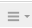

Carga de contenido¶
Plesk ofrece dos formas de cargar contenido en sus dominios:
- Carga de contenido mediante FTP. Un programa denominado cliente FTP le permite conectar con el servidor y cargar contenido.
- Carga de contenido a través del administrador de archivos. Plesk le permite cargar y editar contenido a través de una interfaz web.
Carga de contenido mediante FTP¶
Para conectarse al servidor mediante FTP, necesitará la siguiente información:
- Dirección del servidor FTP. La dirección FTP es el nombre de su dominio, es decir, la dirección de internet de su sitio.
- Nombre de usuario FTP. Es exactamente el mismo que su nombre de usuario del sistema. Para conocer su nombre de usuario del sistema, vaya a Sitios web y dominios > Acceso a hosting web. Lo encontrará bajo Nombre de usuario. Si lo desea, puede cambiar su nombre de usuario del sistema.
- Contraseña FTP. Esta es idéntica a su contraseña de usuario de sistema. Si no conoce su contraseña de usuario del sistema, vaya a Sitios web y dominios > Acceso a hosting web. Puede restablecer la contraseña bajo Contraseña.
Asimismo, necesitará un programa del tipo cliente FTP. Existen muchos clientes FTP gratuitos en internet, como FileZilla o FireFTP. Descargue e instale el cliente en su ordenador para conectar con el servidor FTP. Si desea más información acerca del procedimiento a seguir para instalarlo y configurarlo, consulte las indicaciones del cliente FTP.
Para cambiar las credenciales de la cuenta FTP, vaya a Sitios web y dominios > Acceso a hosting web.
{kind=link}
A continuación, indique un nombre de usuario y una contraseña nuevos para el Usuario del sistema.
{kind=link}
Carga de contenido a través del administrador de archivos¶
Para cargar contenido, vaya a Archivos, localice la carpeta en la que desea cargar el contenido, haga clic en Cargar, seleccione el archivo a cargar y haga clic en Abrir.
Si desea cargar varios archivos, para ahorrar tiempo es recomendable que los comprima, cargue el archivo comprimido y posteriormente los extraiga. Actualmente solo se ofrece soporte para archivos ZIP.
{kind=link}
Para descargar un archivo, vaya a Archivos, localice la ubicación del archivo que desea descargar, haga clic en el icono , junto al archivo en cuestión, y en el menú, seleccione Descargar.
{kind=link}
{kind=link}
Para comprimir archivos, vaya a Archivos, localice la ubicación del archivo o la carpeta que desea comprimir, marque la casilla adyacente y haga clic en Añadir a archivo comprimido.
{kind=link}
Para extraer archivos desde un archivo comprimido, vaya a Archivos, marque la casilla adyacente al archivo que desea extraer y haga clic en Extraer archivos.
{kind=link}
Para editar archivos, vaya a Archivos, localice el archivo que desea editar y proceda de uno de los siguientes modos:
Para editar un archivo en el editor de código, haga clic en el icono
 junto al archivo que desea editar y, en el menú, seleccione Editar en editor de código.
junto al archivo que desea editar y, en el menú, seleccione Editar en editor de código.Para editar un archivo en el editor HTML, haga clic en el icono
junto al archivo que desea editar y, en el menú, seleccione Editar en editor HTML.Si por el contrario desea editar el archivo con el editor de texto, haga clic en el icono , junto al archivo que desea editar, y, en el menú, seleccione Editar en un editor de texto.
{kind=link}
{kind=link}